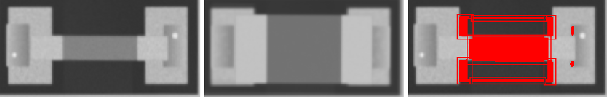
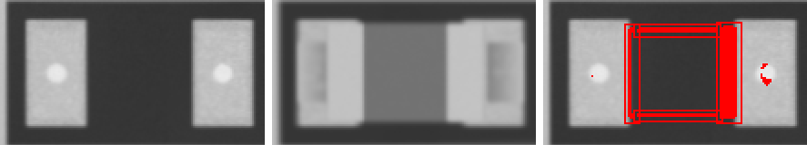
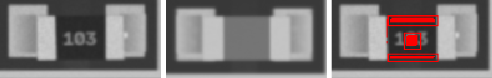
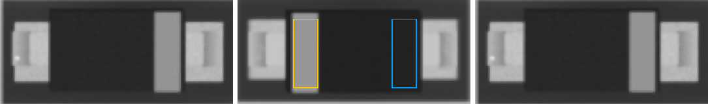
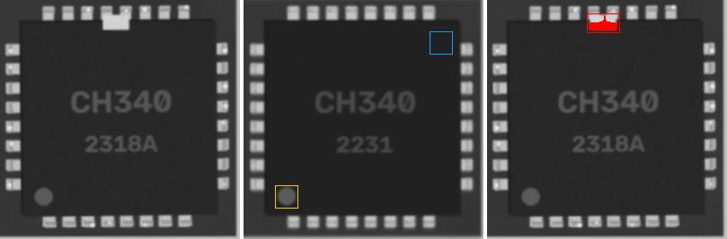

1u · 1206
MISMATCH

ncc 0.718 · ncc_thr 0.6 · mad 27.9 · mad_thr 8.0 · dx_mm -0.023 · dy_mm 0.0 · dtheta_deg -0.0 · anomaly_px 3075
10u · 0805
MISMATCH

ncc 0.726 · ncc_thr 0.6 · mad 42.8 · mad_thr 8.4 · dx_mm 0.0 · dy_mm 0.0 · dtheta_deg -0.0 · anomaly_px 844
4u7 · 0603
MISMATCH

ncc 0.86 · ncc_thr 0.6 · mad 24.1 · mad_thr 8.5 · dx_mm 0.047 · dy_mm 0.07 · dtheta_deg -0.0 · anomaly_px 292
SOD-123 · SOD-123
POLARITY

ncc 0.802 · ncc_thr 0.6 · ncc_180 0.968 · mad 1.3 · mad_thr 6.8 · mark_ncc {'0': 0.334, '180': 0.081} · dx_mm -0.047 · dy_mm -0.047 · dtheta_deg -0.0 · anomaly_px 0
CH340 · QFN-32
ANOMALY

ncc 0.813 · ncc_thr 0.6 · mad 5.7 · mad_thr 7.3 · mark_ncc {'0': 0.987, '90': 0.227, '180': 0.219, '270': 0.103} · dx_mm 0.047 · dy_mm 0.0 · dtheta_deg -0.0 · anomaly_px 311
STM32F030 · TSSOP-20
ANOMALY

ncc 0.911 · ncc_thr 0.6 · mad 1.7 · mad_thr 7.8 · mark_ncc {'0': 0.97, '180': 0.203} · dx_mm -0.07 · dy_mm 0.047 · dtheta_deg -0.0 · anomaly_px 155
47u · CP_Elec_5x5.8
ncc 0.998 · ncc_thr 0.6 · mad 2.8 · mad_thr 18.5 · mark_ncc {'0': 0.994, '180': -0.214} · dx_mm 0.0 · dy_mm 0.0 · dtheta_deg -0.0 · anomaly_px 0
100n · 1206
ncc 0.968 · ncc_thr 0.6 · mad 4.1 · mad_thr 8.1 · dx_mm 0.023 · dy_mm 0.0 · dtheta_deg -0.0 · anomaly_px 0
1u · 0603
ncc 0.96 · ncc_thr 0.6 · mad 6.9 · mad_thr 9.7 · dx_mm 0.0 · dy_mm 0.0 · dtheta_deg -0.0 · anomaly_px 0
Tantalum_Case-A · Tantalum_Case-A
ncc 0.975 · ncc_thr 0.6 · mad 4.9 · mad_thr 8.2 · mark_ncc {'0': 0.999, '180': 0.949} · dx_mm 0.047 · dy_mm -0.023 · dtheta_deg -0.0 · anomaly_px 0
4u7 · 0603
ncc 0.973 · ncc_thr 0.6 · mad 6.1 · mad_thr 9.1 · dx_mm -0.023 · dy_mm 0.047 · dtheta_deg -0.0 · anomaly_px 0
10u · 0805
ncc 0.975 · ncc_thr 0.6 · mad 4.9 · mad_thr 9.0 · dx_mm 0.023 · dy_mm 0.0 · dtheta_deg -0.0 · anomaly_px 0
Tantalum_Case-A · Tantalum_Case-A
ncc 0.96 · ncc_thr 0.6 · mad 5.5 · mad_thr 13.6 · mark_ncc {'0': 0.994, '180': 0.134} · dx_mm -0.07 · dy_mm 0.0 · dtheta_deg -0.0 · anomaly_px 0
10u · 0402
ncc 0.953 · ncc_thr 0.6 · mad 6.6 · mad_thr 10.3 · dx_mm 0.023 · dy_mm 0.0 · dtheta_deg -0.0 · anomaly_px 0
220u · CP_Elec_5x5.8
ncc 0.978 · ncc_thr 0.6 · mad 9.1 · mad_thr 13.7 · mark_ncc {'0': 0.854, '180': -0.136} · dx_mm 0.0 · dy_mm 0.07 · dtheta_deg -0.0 · anomaly_px 0
4u7 · 0402
ncc 0.938 · ncc_thr 0.6 · mad 8.0 · mad_thr 13.5 · dx_mm 0.047 · dy_mm -0.023 · dtheta_deg -0.0 · anomaly_px 0
1u · 0402
ncc 0.951 · ncc_thr 0.6 · mad 5.8 · mad_thr 10.1 · dx_mm 0.0 · dy_mm 0.023 · dtheta_deg -2.0 · anomaly_px 0
Tantalum_Case-A · Tantalum_Case-A
ncc 0.969 · ncc_thr 0.6 · mad 3.9 · mad_thr 29.4 · mark_ncc {'0': 0.994, '180': 0.523} · dx_mm 0.0 · dy_mm -0.023 · dtheta_deg -0.0 · anomaly_px 0
10u · 0603
ncc 0.972 · ncc_thr 0.6 · mad 7.6 · mad_thr 9.1 · dx_mm 0.023 · dy_mm 0.023 · dtheta_deg -0.0 · anomaly_px 0
10n · 0603
ncc 0.967 · ncc_thr 0.6 · mad 6.5 · mad_thr 9.2 · dx_mm 0.0 · dy_mm 0.0 · dtheta_deg -0.0 · anomaly_px 0
1u · 0805
ncc 0.975 · ncc_thr 0.6 · mad 5.4 · mad_thr 8.4 · dx_mm 0.0 · dy_mm 0.0 · dtheta_deg -0.0 · anomaly_px 0
22p · 0603
ncc 0.967 · ncc_thr 0.6 · mad 6.2 · mad_thr 9.5 · dx_mm 0.047 · dy_mm 0.0 · dtheta_deg -0.0 · anomaly_px 0
22p · 0603
ncc 0.975 · ncc_thr 0.6 · mad 5.9 · mad_thr 9.0 · dx_mm -0.047 · dy_mm 0.023 · dtheta_deg -0.0 · anomaly_px 0
22p · 0603
ncc 0.96 · ncc_thr 0.6 · mad 6.8 · mad_thr 9.4 · dx_mm 0.07 · dy_mm 0.0 · dtheta_deg -0.0 · anomaly_px 0
4u7 · 0402
ncc 0.972 · ncc_thr 0.6 · mad 4.6 · mad_thr 9.7 · dx_mm 0.047 · dy_mm -0.023 · dtheta_deg -0.0 · anomaly_px 0
100n · 0402
ncc 0.956 · ncc_thr 0.6 · mad 6.6 · mad_thr 11.5 · dx_mm 0.07 · dy_mm 0.023 · dtheta_deg -0.0 · anomaly_px 0
10u · 0402
ncc 0.972 · ncc_thr 0.6 · mad 5.6 · mad_thr 9.5 · dx_mm -0.047 · dy_mm -0.023 · dtheta_deg -0.0 · anomaly_px 0
10n · 0402
ncc 0.943 · ncc_thr 0.6 · mad 7.2 · mad_thr 11.7 · dx_mm 0.0 · dy_mm -0.023 · dtheta_deg -0.0 · anomaly_px 0
10u · 0402
ncc 0.977 · ncc_thr 0.6 · mad 6.4 · mad_thr 9.6 · dx_mm 0.023 · dy_mm 0.023 · dtheta_deg -0.0 · anomaly_px 0
22p · 0402
ncc 0.96 · ncc_thr 0.6 · mad 5.5 · mad_thr 11.9 · dx_mm 0.0 · dy_mm 0.023 · dtheta_deg -2.0 · anomaly_px 0
4u7 · 0805
ncc 0.977 · ncc_thr 0.6 · mad 4.2 · mad_thr 7.9 · dx_mm 0.023 · dy_mm 0.023 · dtheta_deg -0.0 · anomaly_px 0
10u · 0603
ncc 0.944 · ncc_thr 0.6 · mad 7.4 · mad_thr 9.3 · dx_mm 0.0 · dy_mm -0.023 · dtheta_deg -0.0 · anomaly_px 0
10u · 0402
ncc 0.979 · ncc_thr 0.6 · mad 6.0 · mad_thr 10.8 · dx_mm 0.0 · dy_mm 0.023 · dtheta_deg -0.0 · anomaly_px 0
10u · 0603
ncc 0.979 · ncc_thr 0.6 · mad 5.5 · mad_thr 9.8 · dx_mm 0.0 · dy_mm 0.0 · dtheta_deg -0.0 · anomaly_px 0
SOD-123 · SOD-123
ncc 0.988 · ncc_thr 0.6 · mad 1.3 · mad_thr 7.2 · mark_ncc {'0': 0.88, '180': 0.043} · dx_mm 0.0 · dy_mm 0.023 · dtheta_deg -0.0 · anomaly_px 0
LED_0805 · LED_0805
ncc 0.984 · ncc_thr 0.6 · ncc_180 0.842 · mad 5.4 · mad_thr 9.3 · mark_ncc {'0': 0.0, '180': 0.0} · dx_mm 0.023 · dy_mm -0.047 · dtheta_deg -0.0 · anomaly_px 0
LED_0805 · LED_0805
ncc 0.988 · ncc_thr 0.6 · ncc_180 0.801 · mad 5.1 · mad_thr 8.7 · mark_ncc {'0': 0.0, '180': 0.0} · dx_mm 0.07 · dy_mm 0.0 · dtheta_deg -0.0 · anomaly_px 0
SOD-123 · SOD-123
ncc 0.991 · ncc_thr 0.6 · mad 0.9 · mad_thr 7.0 · mark_ncc {'0': 0.979, '180': 0.064} · dx_mm 0.0 · dy_mm 0.023 · dtheta_deg -0.0 · anomaly_px 0
LED_0805 · LED_0805
ncc 0.978 · ncc_thr 0.6 · ncc_180 0.942 · mad 5.2 · mad_thr 9.2 · mark_ncc {'0': 0.0, '180': 0.0} · dx_mm 0.0 · dy_mm 0.0 · dtheta_deg -0.0 · anomaly_px 0
SOD-123 · SOD-123
ncc 0.993 · ncc_thr 0.6 · mad 1.0 · mad_thr 7.0 · mark_ncc {'0': 0.879, '180': -0.02} · dx_mm -0.023 · dy_mm 0.023 · dtheta_deg -0.0 · anomaly_px 0
4u7 · L_4x4
ncc 0.983 · ncc_thr 0.6 · mad 1.0 · mad_thr 7.1 · dx_mm 0.023 · dy_mm 0.023 · dtheta_deg -0.0 · anomaly_px 0
A7 · SOT-23
ncc 0.962 · ncc_thr 0.6 · ncc_180 0.282 · mad 1.3 · mad_thr 6.9 · mad_180 2.6 · dx_mm 0.0 · dy_mm 0.047 · dtheta_deg -0.0 · anomaly_px 0
A7 · SOT-23
ncc 0.982 · ncc_thr 0.6 · ncc_180 0.601 · mad 0.9 · mad_thr 7.1 · mad_180 3.7 · dx_mm 0.047 · dy_mm 0.047 · dtheta_deg -0.0 · anomaly_px 0
W1 · SOT-23
ncc 0.988 · ncc_thr 0.6 · ncc_180 0.253 · mad 1.0 · mad_thr 7.1 · mad_180 11.8 · dx_mm 0.023 · dy_mm 0.023 · dtheta_deg -0.0 · anomaly_px 0
A7 · SOT-23
ncc 0.983 · ncc_thr 0.6 · ncc_180 0.344 · mad 0.9 · mad_thr 7.0 · mad_180 13.7 · dx_mm 0.0 · dy_mm 0.023 · dtheta_deg -0.0 · anomaly_px 0
J3Y · SOT-23
ncc 0.978 · ncc_thr 0.6 · ncc_180 0.332 · mad 1.1 · mad_thr 7.1 · mad_180 19.1 · dx_mm 0.0 · dy_mm -0.07 · dtheta_deg -0.0 · anomaly_px 0
220 · 1206
ncc 0.945 · ncc_thr 0.6 · mad 4.3 · mad_thr 8.9 · dx_mm 0.0 · dy_mm 0.0 · dtheta_deg -0.0 · anomaly_px 0
10k · 0603
ncc 0.967 · ncc_thr 0.6 · mad 7.0 · mad_thr 9.6 · dx_mm 0.047 · dy_mm 0.023 · dtheta_deg 2.0 · anomaly_px 0
220 · 0805
ncc 0.95 · ncc_thr 0.6 · mad 6.6 · mad_thr 9.4 · dx_mm 0.0 · dy_mm 0.0 · dtheta_deg -0.0 · anomaly_px 0
4k7 · 0603
ncc 0.967 · ncc_thr 0.6 · mad 7.3 · mad_thr 10.4 · dx_mm 0.023 · dy_mm 0.0 · dtheta_deg -0.0 · anomaly_px 0
1k · 0402
ncc 0.983 · ncc_thr 0.6 · mad 7.7 · mad_thr 15.1 · dx_mm -0.047 · dy_mm 0.0 · dtheta_deg -2.0 · anomaly_px 0
220 · 0603
ncc 0.964 · ncc_thr 0.6 · mad 7.5 · mad_thr 10.5 · dx_mm -0.047 · dy_mm -0.023 · dtheta_deg 2.0 · anomaly_px 0
0R · 1206
ncc 0.959 · ncc_thr 0.6 · mad 4.7 · mad_thr 9.1 · dx_mm -0.023 · dy_mm 0.093 · dtheta_deg -0.0 · anomaly_px 0
10k · 0402
ncc 0.987 · ncc_thr 0.6 · mad 6.4 · mad_thr 17.1 · dx_mm -0.047 · dy_mm -0.047 · dtheta_deg -0.0 · anomaly_px 0
1k · 0402
ncc 0.978 · ncc_thr 0.6 · mad 4.8 · mad_thr 21.1 · dx_mm 0.07 · dy_mm 0.023 · dtheta_deg -2.0 · anomaly_px 0
1k · 0603
ncc 0.975 · ncc_thr 0.6 · mad 6.3 · mad_thr 11.5 · dx_mm -0.023 · dy_mm 0.0 · dtheta_deg -0.0 · anomaly_px 0
100k · 0402
ncc 0.969 · ncc_thr 0.6 · mad 7.0 · mad_thr 12.2 · dx_mm -0.093 · dy_mm -0.047 · dtheta_deg -0.0 · anomaly_px 0
220 · 1206
ncc 0.946 · ncc_thr 0.6 · mad 5.1 · mad_thr 9.0 · dx_mm -0.047 · dy_mm -0.023 · dtheta_deg -0.0 · anomaly_px 0
0R · 0805
ncc 0.952 · ncc_thr 0.6 · mad 4.7 · mad_thr 9.7 · dx_mm -0.023 · dy_mm -0.047 · dtheta_deg -0.0 · anomaly_px 0
1k · 0805
ncc 0.954 · ncc_thr 0.6 · mad 5.1 · mad_thr 9.4 · dx_mm -0.07 · dy_mm 0.0 · dtheta_deg -0.0 · anomaly_px 0
RP2040 · LQFP-48
ncc 0.94 · ncc_thr 0.6 · mad 1.1 · mad_thr 7.2 · mark_ncc {'0': 0.967, '90': 0.077, '180': 0.106, '270': 0.194} · dx_mm 0.0 · dy_mm 0.0 · dtheta_deg -0.0 · anomaly_px 0
24C02 · SOIC-8
ncc 0.935 · ncc_thr 0.6 · mad 0.9 · mad_thr 7.2 · mark_ncc {'0': 0.96, '180': 0.111} · dx_mm 0.0 · dy_mm -0.047 · dtheta_deg -0.0 · anomaly_px 0
PCA9685 · TSSOP-20
ncc 0.954 · ncc_thr 0.6 · mad 1.4 · mad_thr 7.7 · mark_ncc {'0': 0.967, '180': 0.195} · dx_mm 0.023 · dy_mm -0.023 · dtheta_deg -0.0 · anomaly_px 0
LD1117 · SOT-223
ncc 0.96 · ncc_thr 0.6 · ncc_180 0.674 · mad 1.3 · mad_thr 7.2 · mad_180 5.9 · dx_mm -0.023 · dy_mm -0.023 · dtheta_deg -0.0 · anomaly_px 0
AMS1117 · SOT-223
ncc 0.964 · ncc_thr 0.6 · ncc_180 0.57 · mad 1.1 · mad_thr 7.0 · mad_180 5.1 · dx_mm 0.023 · dy_mm 0.116 · dtheta_deg -0.0 · anomaly_px 0